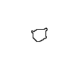
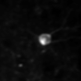

<!-- <script src="https://code.highcharts.com/highcharts.js"></script> -->
<script src="https://assets.crowd.aws/crowd-html-elements.js"></script>
<link href="https://fonts.googleapis.com/icon?family=Material+Icons" rel="stylesheet">

<script src="https://code.highcharts.com/stock/highstock.js"></script>
<script src="https://code.highcharts.com/stock/modules/data.js"></script>
<script src="https://code.highcharts.com/modules/boost.js"></script>


<style>
	body {
		padding-left: 20px;
		margin-bottom: 20px;
    max-width: 1380px;
    margin: auto;
	}
	.outer-container {
	    display: flex;
      flex-wrap: wrap;
	    justify-content: space-evenly;
	    max-width: 700px;
      min-width: 600px;
	    /* margin-left: 100px; */
	}
  .roi-overlay {
    position: relative;
    /* left: 50;
    top: 50; */
    left: 0;
    top: 0;
    opacity: 1.0;
    z-index: 100;
  }
  #roi-mask {
    opacity: 0.5;
  }
  #roi-outline {
    opacity: 1.0;
  }
  #play-pause {
    position: relative;
    top: 34;
    left: 20;
    border: none;
    background-color: transparent;
    z-index: 100;
    outline: none;
    cursor: pointer;
  }
  .underlay {
    position: absolute;
    /* left: 50;
    top: 50; */
  }
  /* .container {
    height: 100;
    margin-bottom: 20;
  } */
  .image-label{
    width: 100;
    margin-bottom:10;
    font-size: small;
  }
  .toggle-controls{
    margin-bottom: 10;
  }
  .progress-bar {
  flex:10;
  position: relative;
  display:flex;
  flex-basis:100%;
  height:5px;
  transition:height 0.3s;
  background:rgba(0,0,0,0.5);
  cursor:ew-resize;
  margin-bottom:20;
}
#progress-fill {
  width:0%;
  background:#ffc600;
  flex:0;
  flex-basis:0%;
}
</style>


<crowd-form>
  <crowd-classifier
    name="roiLabel"
    categories="['cell', 'not cell']"
    header="Is the region of interest a cell or not a cell?"
  >
    <classification-target>

      <div class="toggle-controls">
        <button id="toggle-mask" type="button" onclick="toggleMaskOutline()">Show Mask</button>
        <!-- <button id="play-pause" type="button" onclick="togglePlayPause()"><i class="material-icons">play_circle_outline</i></button> -->
      </div>
      <div class="outer-container">
        <span class="image-label">2p Recording</span>
        <span class="image-label">Average Projection</span>
        <span class="image-label">Max Projection</span>
        <span class="image-label">ROI Mask</span>
      </div>
      <div class="outer-container">
        <div class="container">
          <span class="underlay">
            <video id="roivid" width="100", height="100">
              <source src="../resources/exp_716956096_4hz_small.mp4" type="video/mp4">
            Your browser does not support the video tag.
            </video>
          </span>
          <span class="roi-overlay">
            
          </span>
          <div class="progress-bar">
            <div id="progress-fill"></div>
          </div>
        </div>
        <div class="container">
          <span class="underlay">
            
          </span>
          <span class="roi-overlay">
            
          </span>
        </div>
        <div class="container">
          <span class="underlay">
            
          </span>
          <span class="roi-overlay">
            
          </span>
        </div>
        <div class="container">
          <span class="roi-overlay">
            
          </span>
        </div>
        <!-- <div class="progress-bar">
          <div id="progress-fill"></div>
        </div> -->
    </div> 
    <div>
      <button id="play-pause" type="button" ><i class="material-icons">play_circle_outline</i></button>
    </div>
    <div class = "outer-container">
      <div id="hc-container" style="height: 300px; min-width: 500px"></div>
    </div>
        <div id="video-instructions">
          <p>Click a point on the ROI trace to jump to that point in the video.<br>
          If the video is currently playing, it will continue playing at the selected time.<br>
          Use the button on the upper right to toggle between full mask overlay and outline.
        </div> 
      
    </classification-target>
    
    <full-instructions header="Cell Detection Instructions">
        <p>Pick whether the region of interest is a cell or not.</p>
        <div>
           <p><strong>Example: </strong>I would like to return a pair of shoes</p>
           <p><strong>Intent: </strong>Return</p>
        </div>
    </full-instructions>

    <short-instructions>
        Pick whether the region of interest is a cell or not.
    </short-instructions>
  </crowd-classifier>
</crowd-form>

<script>
  // --- dummy data  --- //
  function getData(n) {
    var arr = [],
        i,
        x,
        a,
        b,
        c,
        spike;
    for (
        i = 0, x = Date.UTC(new Date().getUTCFullYear(), 0, 1) - n * 36e5;
        i < n;
        i = i + 1, x = x + 36e5
    ) {
        if (i % 100 === 0) {
            a = 2 * Math.random();
        }
        if (i % 1000 === 0) {
            b = 2 * Math.random();
        }
        if (i % 10000 === 0) {
            c = 2 * Math.random();
        }
        if (i % 50000 === 0) {
            spike = 10;
        } else {
            spike = 0;
        }
        arr.push(//[
           // i*1000,
            2 * Math.sin(i / 100) + a + b + c + spike + Math.random()
        //]
        );
    }
    return arr;
}
  let n = 26 * 4, //144000,
    data = getData(n);

  // Create a timer
  var start = +new Date();
  var video = document.getElementById("roivid");
  var videoButton = document.getElementById('play-pause')
  var progressFill = document.getElementById("progress-fill")

  // Create the chart
  Highcharts.chart('hc-container', {

    chart : {
      zoomType: 'x',
      events: {
        load: function() {
          var ch = this
          
          playSelection = ch.renderer.button('Play Selection', null, null, function(){
            console.log(ch.xAxis[0].getExtremes());
            var extremes = ch.xAxis[0].getExtremes();
            playVideoSelection(video, extremes.min, extremes.max);
          }, {
              zIndex: 20
          }).attr({
            id: 'playSelection',
            align: 'left',
            title: 'Play video selection'
          }).add().align({
            align: 'left',
            x: 15,
            y: 5
          }, false, null);

          zoomButton = ch.renderer.button('Reset zoom', null, null, function(){
            ch.xAxis[0].setExtremes(null, null);
          }, {
              zIndex: 20
          }).attr({
            id: 'resetZoom',
            align: 'right',
            title: 'Reset zoom level 1:1'
          }).add().align({
            align: 'right',
            x: -15,
            y: 5
          }, false, null);
        },
        click: function (event) {
          video.pause();
          video.currentTime = Math.floor(event.xAxis[0].value)
        },
      }
    },

    title: {
        text: 'Trace of ' + n + ' points',
        style: {
          fontSize: "18px"
        }
    },
    yAxis: {
      minPadding: 0
    },

    navigator: {
      enabled: true,
    },

    series: [{
        name: 'Hourly data points',
        data: data,
        tooltip: {
            valueDecimals: 2
        },
        pointStart: 0,
        pointInterval: .25,     // milliseconds; 4 fps sampling is 250 ms per frame
    }]
  });

  function playPauseVideo(video) {
    let isPlaying = video.currentTime > 0 && !video.paused && !video.ended 
      && video.readyState > 2;
    if (!isPlaying) {
      video.play();
    } else {
      video.pause();
    }
  };

  function playVideoSelection(video, startTime, endTime) {
    // Play the video from startTime to endTime
    video.removeEventListener("timeupdate", pauseAtTime);
    let isPlaying = video.currentTime > 0 && !video.paused && !video.ended 
      && video.readyState > 2;
    if (endTime <= startTime) throw "Selection end must be after start.";
    if (!isPlaying) {
      video.currentTime = startTime;
      video.play();
    } else {
      video.pause();
      video.currentTime = startTime;
      video.play();
    }
    var pauseAtTime = function(){
      if (video.currentTime >= endTime) {
        video.pause();
        video.removeEventListener("timeupdate", pauseAtTime);
      };
    }
    video.addEventListener("timeupdate", pauseAtTime);
  };

  function togglePlayPause() {
    var isPlaying = video.currentTime > 0 && !video.paused && !video.ended 
        && video.readyState > 2;
    if (!isPlaying){
      videoButton.innerHTML = "<i class='material-icons'>play_circle_outline</i>"
    }
    else {
      videoButton.innerHTML = "<i class='material-icons'>pause_circle_outline</i>"
    }
  }

  function updateProgress() {
      let value = video.currentTime / video.duration * 100;
      progressFill.style.width = value.toString() + "%"
      progressFill.style.flexBasis = value.toString() + "%"
  }

  videoButton.addEventListener('click', function(e) {
    let isPlaying = video.currentTime > 0 && !video.paused && !video.ended 
    && video.readyState > 2;
    if (!isPlaying) {
      video.play();
    } else {
      video.pause();
    }
  });

  // Swap between masks and outlines
  function toggleMaskOutline() {
    let toggleMaskButton = document.getElementById('toggle-mask')
    if(toggleMaskButton.innerHTML === "Show Mask Outline"){
      toggleMaskButton.innerHTML = "Show Mask Overlay";
      roiElements = document.getElementsByClassName("roi-image");
      for (let i = 0; i < roiElements.length; i++) {
        roiElements[i].src = "../resources/roi_mask_outline.png";
        roiElements[i].id = "roi-outline"
      }
    }
    else {
      toggleMaskButton.innerHTML = "Show Mask Outline";
      roiElements = document.getElementsByClassName("roi-image");
      for (let i = 0; i < roiElements.length; i++) {
        roiElements[i].src = "../resources/roi_mask.png";
        roiElements[i].id = "roi-mask"
      }
    }
  }


  video.addEventListener('play', function() {
    togglePlayPause();
  }, false);

  video.addEventListener('pause', function() {
    togglePlayPause();
  }, false);

  video.addEventListener('ended', function() {
    togglePlayPause();
  }, false);

  video.addEventListener("timeupdate", function() {
    updateProgress()
  }, false);


  </script>